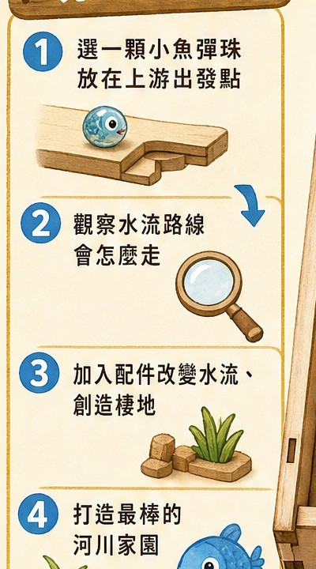
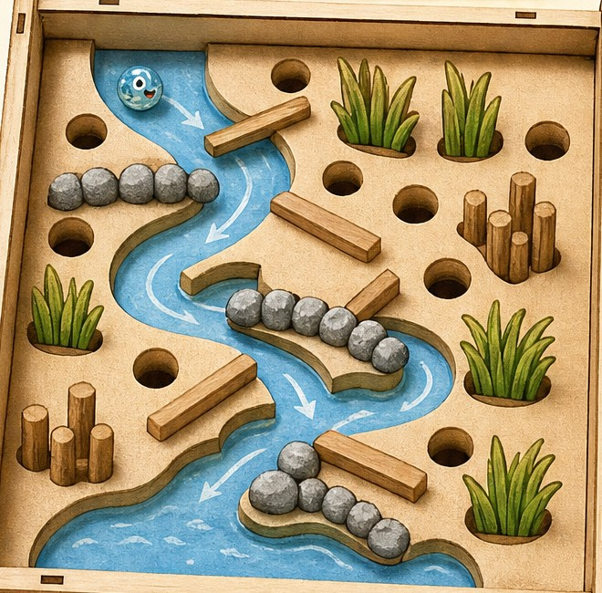
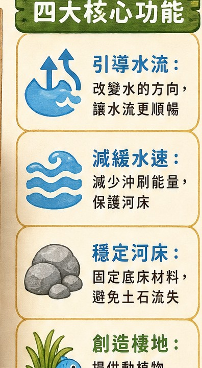

紅棗樹成長教具
棗比的成長任務
跟著紅棗樹走過萌芽、長葉、開花、結果、採收與休養，透過可操作教具認識植物生命週期。
賣貨便開放後即可由此進入賣場。
Educational Products
從紅棗生長到水圳生態，透過動手操作認識公館的農業與自然環境。
紅棗樹成長教具
跟著紅棗樹走過萌芽、長葉、開花、結果、採收與休養，透過可操作教具認識植物生命週期。
賣貨便開放後即可由此進入賣場。
穿龍水圳生態教具
自由配置水流、石頭與水草，觀察水流路線，理解引導水流、減緩水速、穩定河床與創造棲地的方法。
賣貨便開放後即可由此進入賣場。

